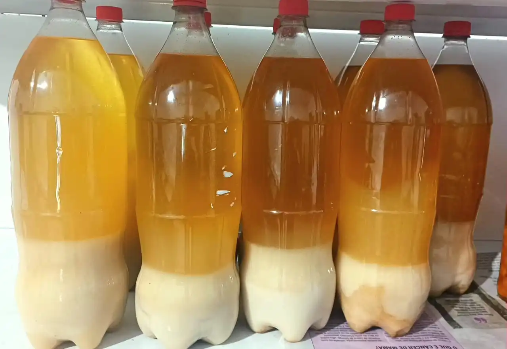
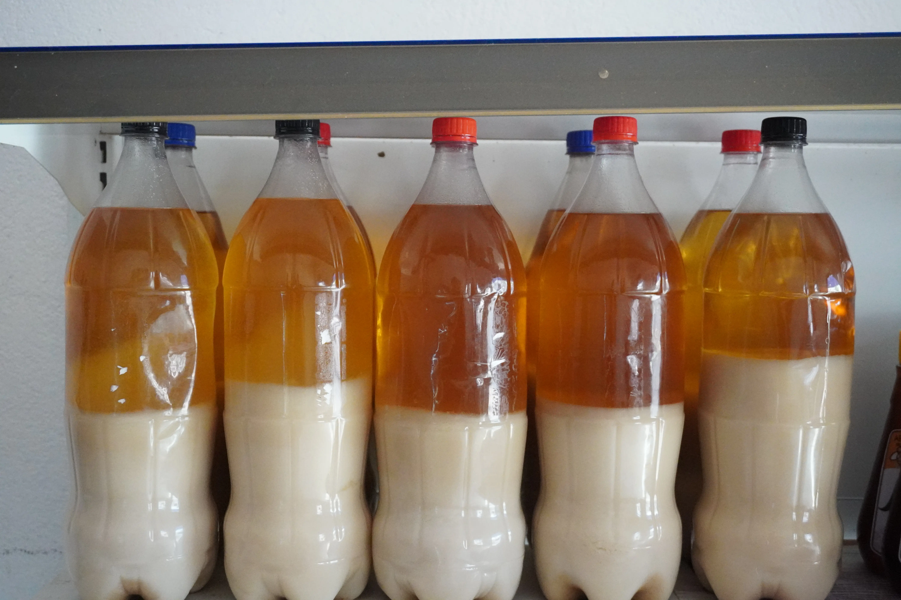
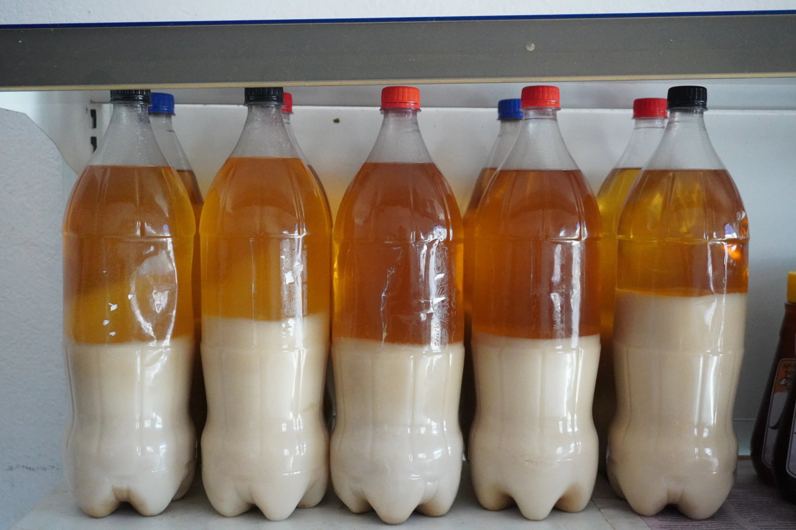
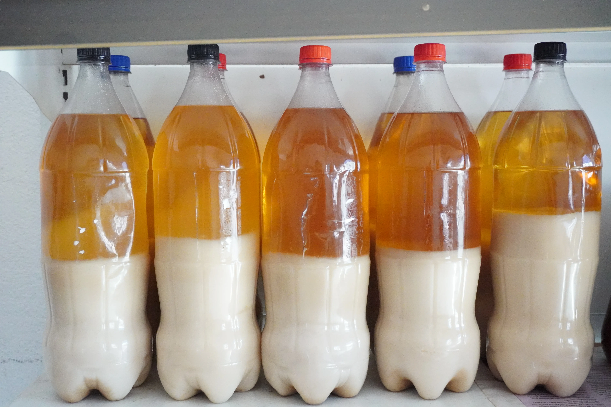

Banha de Porco
Produto artesanal de alta qualidade.
Consultar Disponibilidade e EncomendarRetire na loja: R. Bom Jardim, 379 — Centro, Cáceres.
Banha de Porco Artesanal: A Gordura que a Ciência e a Tradição Reabilitaram
Durante décadas, a banha de porco foi vítima de uma das maiores injustiças nutricionais do século XX. Com a chegada dos óleos vegetais refinados e das margarinas hidrogenadas, ela foi demonizada pela indústria alimentícia como causadora de doenças cardiovasculares — uma narrativa que convinha mais aos interesses comerciais do que à ciência. Hoje, a nutrição moderna revisou completamente esse veredicto: a banha de porco pura e natural possui um perfil lipídico mais favorável do que a maioria dos óleos vegetais ultraprocessados, sendo rica em ácido oleico (a mesma gordura saudável do azeite de oliva), vitamina D em forma biodisponível e colina, essencial para a saúde cerebral e hepática.
Por que a Nossa Banha é Diferente
A banha que comercializamos na Peixaria Rio Paraguai, em Cáceres-MT, não tem nada em comum com a banha industrializada vendida em bloco nos supermercados. Nossa banha vem do toucinho do porco caipira criado solto na roça, alimentado sem hormônios de crescimento ou antibióticos preventivos. O processo de produção artesanal é feito em fogo baixo e lento — o "banhar" tradicional —, sem hidrogenação, sem antioxidantes sintéticos, sem conservantes de nenhum tipo. O resultado é uma gordura de cor levemente amarelada, de aroma inconfundível e pureza absoluta que qualquer cozinheiro experiente do interior de Mato Grosso reconhece de imediato.
Os Usos Clássicos da Banha na Culinária Caipira
Nas cozinhas das fazendas pantaneiras, a banha de porco nunca saiu de moda. Ela é insubstituível em diversas preparações:
- Torresmo de Rodeio: Feito exclusivamente na banha quente, o torresmo fica estufado, crocante por fora e derretendo por dentro — impossível replicar esse resultado com óleo vegetal.
- Frango Frito Caipira: A banha proporciona uma crocância e um dourado que nenhum outro meio de fritura alcança, além de transferir sabor profundo para a carne.
- Feijão de Caldo: Uma colher de banha no refogado de alho e cebola transforma um feijão simples em um prato com profundidade e alma de roça.
- Biscoito de Polvilho: A gordura que dá maciez e leveza à massa — sem ela, a textura nunca fica igual ao original.
- Arroz Refogado: Um arroz refogado na banha tem um sabor que nenhum óleo de soja consegue entregar — aroma de fazenda em cada grão.
Armazenamento e Disponibilidade
A banha artesanal, armazenada em pote de vidro fechado e em local fresco (ou refrigerada), mantém a qualidade por vários meses sem rancificação. Por ser um produto do ciclo natural de criação do porco caipira, a disponibilidade pode variar ao longo do ano. Consulte o estoque pelo WhatsApp antes de encomendar e traga para a sua cozinha a gordura que o interior de Mato Grosso sempre soube usar com sabedoria.